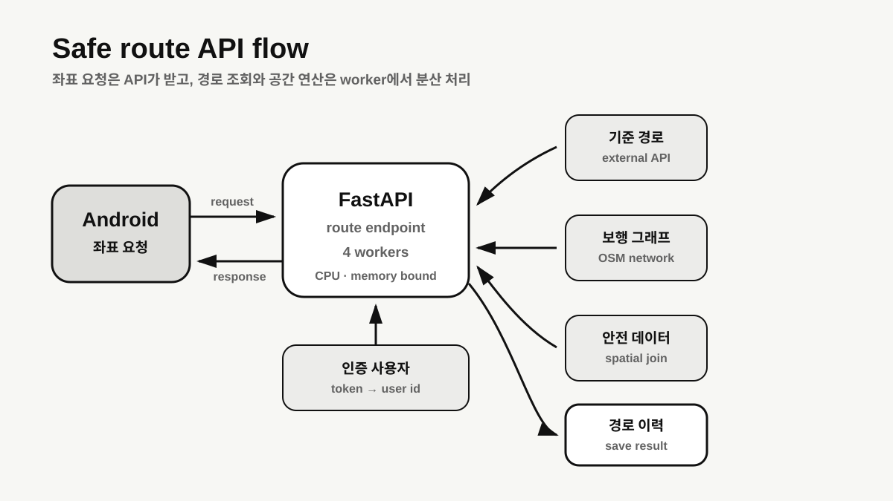

일반 CRUD와 다른 워크로드
등불은 단순 최단 경로가 아니라 CCTV와 파출소 등 안전 요소를 반영한 우회 경로를 계산합니다. 한 요청 안에서 Tmap 경로 조회, OSM 그래프 생성, CCTV 가중치 적용, shortest path 탐색이 이어집니다.
OSMnx, GeoPandas, Shapely를 사용하는 공간 연산은 CPU와 메모리를 모두 사용합니다. 단일 FastAPI 프로세스도 비동기 I/O 요청은 event loop에서 함께 진행할 수 있지만, 동기 CPU 연산이나 blocking I/O가 event loop를 점유하면 다른 요청을 지연시킬 수 있습니다. 따라서 문제는 “단일 worker는 항상 순차 처리한다”가 아니라, 이 워크로드 안의 blocking 구간을 어떻게 격리하고 제한할지였습니다.
클라이언트와 계산 책임 분리
Android 앱은 좌표 요청과 결과 표시에 집중하고, 그래프 연산과 모델 적용은 백엔드의 POST /calculate-route에서 수행하도록 했습니다. 응답에는 Tmap 기본 경로와 안전 우회 경로, 각 경로의 가중치를 함께 담았습니다.

현재 구성: 4개 worker를 적용한 상태
당시에는 Gunicorn과 uvicorn.workers.UvicornWorker를 사용해 요청을 여러 프로세스에 분산하고 worker 수를 4로 설정했습니다. 흔히 인용되는 CPU 코어 수 × 2 + 1은 socket I/O 대기를 전제로 한 경험적 출발점이지 이 서비스의 정답은 아닙니다.
각 worker가 공간 데이터 라이브러리와 그래프를 별도로 메모리에 올릴 수 있어 worker 수를 늘리면 전체 RSS와 컨텍스트 전환 비용도 커집니다. 당시 4개로 제한한 것은 운영 설정 선택이었지만, CPU·메모리·latency를 같은 조건에서 비교하지 않았기 때문에 “안정성이 더 높아졌다”거나 “최적값을 찾았다”고 결론 내릴 수는 없습니다.
gunicorn app.main:app \
--workers 4 \
--worker-class uvicorn.workers.UvicornWorker \
--bind 0.0.0.0:8000uvicorn.workers.UvicornWorker는 현재 Uvicorn 문서에서 deprecated 상태입니다. 새 배포에서는 별도 uvicorn-worker 패키지나 Uvicorn의 내장 worker 실행 방식을 검토하고, 변경 전에 종료 신호와 timeout 동작을 확인해야 합니다.worker 수를 정하려면 필요한 실측
4개가 적절한지 판단하려면 동일한 컨테이너 제한과 동일한 데이터셋에서 1·2·4·8 worker를 비교해야 합니다. 평균 응답 시간만으로는 부족하며 다음 항목을 함께 기록해야 합니다.
- 처리량과 p50·p95·p99 응답 시간, timeout·5xx 비율
- worker별 CPU와 RSS, 컨테이너 memory peak와 OOM·restart 횟수
- 동시 요청 수에 따른 queue 대기와 외부 API 대기 시간
- worker 종료·재시작·배포 중 진행 요청의 완료 여부
현재 공개 기록에는 이 비교 결과가 없으므로 글의 범위는 “4-worker 구성을 적용했다”까지입니다. 성능 개선 폭이나 최적 worker 수는 후속 계측 과제입니다.
인증 사용자와 경로 이력 연결
Cognito 인증 토큰을 기준으로 사용자를 확인하고 내부 user_id와 매핑했습니다. 계산 요청과 응답은 DynamoDB에 저장해 사용자별 경로 이력을 남겼습니다. 관계형 사용자 정보와 가변적인 경로 데이터를 저장소 특성에 맞게 나눴습니다.
- RDS: 사용자와 서비스의 관계형 정보
- DynamoDB: 좌표 배열과 계산 결과를 포함한 경로 이력
- Cognito: 외부 인증 식별자와 내부 사용자 연결
DynamoDB item은 attribute 이름과 값을 합쳐 최대 400KB이므로 “구조가 큰 데이터”를 제한 없이 넣을 수는 없습니다. 좌표 배열·GeoJSON·계산 결과가 한 item의 한도를 넘을 가능성을 측정하고, 크기가 커지면 원문은 S3에 두고 DynamoDB에는 key와 조회용 metadata만 저장하는 방식이 필요합니다. 현재 글에는 실제 item size 분포가 없어 한도 내라는 결론을 내리지 않습니다.
외부 API와 계산 요청의 운영 경계
worker를 늘리는 것만으로 Tmap 지연이나 공간 연산 폭주를 해결할 수는 없습니다. 외부 API에는 connect/read timeout, 제한된 retry와 rate limit 대응이 필요하고, 실패가 연쇄적으로 worker를 점유하지 않도록 circuit breaker나 요청 중단 기준을 검토해야 합니다.
서비스 쪽에는 동시 계산 수 상한과 backpressure, readiness probe, graceful shutdown과 worker timeout이 필요합니다. 요청 한 번의 CPU 연산이 HTTP 처리 시간을 넘길 정도로 길다면 process worker를 더 늘리기보다 별도 job queue나 계산 worker로 분리하는 설계도 비교해야 합니다. 이 항목들은 현재 구현 성과가 아니라 운영 전에 확인해야 할 조건입니다.
프로세스 수만으로 끝나지 않는 처리량 설계
4-worker 실행 구조를 적용해 단일 프로세스와 다른 격리 경계를 만들었지만, 그것만으로 처리량이나 안정성 개선을 입증한 것은 아닙니다. 다음 단계는 worker별 CPU·RSS·tail latency를 실측하고, 외부 API 대기와 CPU 연산을 분리해 병목을 확인하는 일입니다.
이번 구성에서 분명해진 것은 비동기 프레임워크, 다중 프로세스, CPU 작업 분리, 외부 API 장애 대응이 서로 다른 문제라는 점입니다. worker 수는 그중 하나의 조절값이며, 데이터 크기와 실패·종료 동작까지 함께 검증해야 운영 기준이 됩니다.
NEXT POSTS3 업로드와 DB 저장 사이의 보상 흐름 설계 →